猫を連れて避難生活は可能？ [梅吉]
今朝6時の時報とほぼ同時に鳴り響いた緊急地震速報、その後の津波警報に背筋が寒くなりました。
今のところあまり大きな被害は報道されていないようですね。
朝早くから不安な思いを抱えて避難された皆様お疲れ様でした。
このまま静かに収まって欲しいです。
おっとと、災害時こんなケースの時はどうする？という話をよくしています。
色々なケースを想定して地理的条件、住居の構造などなどごたまぜにして出た結論が
火事を除いてはほぼ家にとどまって様子見ということ。
梅吉を連れての避難生活は考えられない・・・家にとどまる為の対策も色々講じています。
それでも何かあった時は避難する、しないにかかわらずキャリーを出して梅吉を収納することが
最優先事項です。
おとーさんとおかーさんは色々考えてるんですよ。梅吉さん。
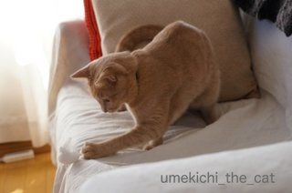
飼い主の心配をよそに夢中であそぶ梅吉さん。
ねこが平和に遊べる生活に感謝です。梅吉さんはありがたいと思っている？
ありがたそうでなによりです。
予感的中 [梅吉]
先日の歯ブラシと一緒にたまには美味しくお口のケアもよいじゃない、
と思い「食べられる歯磨きロープ」なるものを購入。
こんな形状のおやつ式歯磨きです。ちゃんとカミカミしてくださいよ梅吉さん。

すべてにもれなく参加猫なのですぐにやってきました。

半分口に入れました！

あれ？もうありません・・・


わーーーーーーーーーε=ε=ε=┏(ﾟロﾟ;)┛
カミカミどころかほとんど丸呑みでした。商品レビューに「うちの子は丸呑みでした・・・涙」といくつかの書き込みがあったので予感はしていたんですよね〜。
味見してはいませんが、イカの燻製？のような珍味的な香りがしていたので美味しすぎたのかも。
食べたところのフローリングを名残惜しげになめていました。
どうやらお口のケアはおかーさんが歯ブラシをがんばるしかないようです。やれやれ。
新聞が好き [梅吉]
ブログにゃんこ歯が命？ [梅吉]
梅吉さん、にゃんこだって歯磨きした方が良いの知ってた？
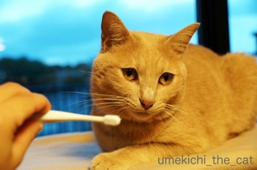
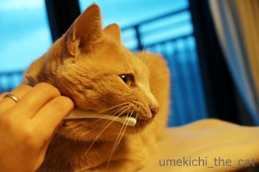
お手入れしておかないと歯が抜けちゃって美味しくゴハンがたべられませんよ。
ブログにゃんことして身だしなみを整えて好感度もアップしなきゃ。
さあさあ（ぐりぐり）
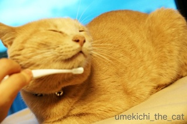
みがくのはそこじゃありません。
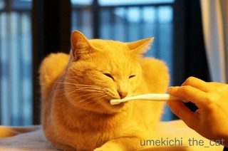
ほらほら、ちゃんとお口開けてください。
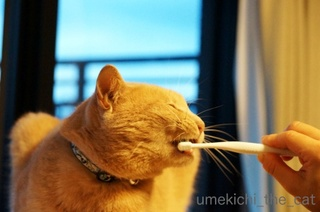
そうそうその調子。
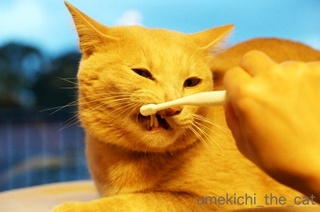
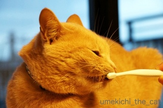
思ったよりも協力的な梅吉さんでした。
Amazon等のレビューを読んだり実際にペットショップに足を運んだりしたのですが
ピンとくる歯磨きツールが見つからない。
そんなときは赤ちゃん用品！体重計の時と同じ発想。
ありました、ありました。お手頃価格でにゃんこのお口にも使いやすそうで日本製。
ガブガブかじっても歯磨き効果はあるかな〜と思っておもちゃ感覚で使っています。
ぐえっとなるかもしれないから１にゃんでは使わせませんよ〜。
タグ：歯磨き
冬のねこ [梅吉]
冬を感じるようになってくると（昨日の我が家付近は22℃でしたが）梅吉さんの写真は寝ているものばっかり。
私がカメラマン活動をサボっているわけではありません。
今日も今日とてカメラを向けると・・・
お掃除途中のもろもろの山の上に必死にしがみついて寝ています。
チェックの物体は夜に使っていたゆたんぽ。まだまだぬくい。
しばらくすると・・・
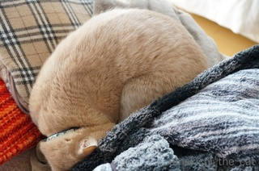
頭を下にしてアンモニャイトに。頭に血が上らないんだろうか。
寝姿写真の次はあくび〜。
最近寝姿、あくび姿ばかりになってます。
もう少し活動しているところを撮りたい！
秘密の時間 [梅吉]
冬アイテム登場 [梅吉]
梅吉ことば [梅吉]
100均で買ってきたスーパーボールがお気に召した梅吉さん。
うねうねと転がってゆくのが面白いらしい。写真を撮っているのに気づくと、

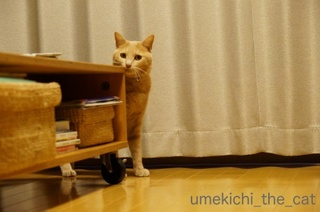
以前も〜さんにもコメントしていただいたことがあるのですが
梅吉は本当に大阪弁をしゃべっていると思います。
大阪生まれじゃなかったとしても（梅吉は大阪市都島区出身）絶対大阪弁。
目つき、態度、すべてがそう思わせるんだな〜。
お洗濯物乗り猫＆脱走猫 [梅吉]
最低気温が一ケタになってきたので本格的に冬支度。
お洗濯して取り込んでおいた夏物のタオルケットをしまおうとすると・・・・

ああ、やられました〜。
梅吉さん、それはしまいたいのですが。
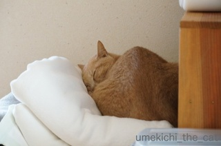
動く気配ゼロ。
寝入り始めたので今のうちに出かけてしまおうとすると・・・・

![[猫]](https://blog.ss-blog.jp/_images_e/101.gif) ん？なんや
ん？なんや

あやしいけはいや

わしをだしぬこうなんてみらいえいごうむりやで
わしのでばんやな（みょ〜〜〜ん）
出かけようと身支度を始めると寝入っていても必ず起きてきていつのまにか後ろに控えています( ﾟдﾟ)
出かけに必ずカリカリを２〜３粒与えているのですが（その隙に家から出る。そうしないと後追いを振り切れない）
もらえるまでにゃ〜にゃ〜にゃ〜にゃ〜まとわりついて大変です。
簡単に家から出たいよ〜。
 ↑ガブッと一押し↑
↑ガブッと一押し↑
お洗濯して取り込んでおいた夏物のタオルケットをしまおうとすると・・・・

ああ、やられました〜。
梅吉さん、それはしまいたいのですが。
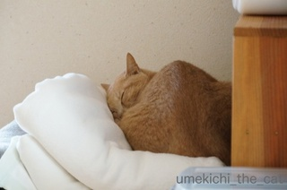
動く気配ゼロ。
寝入り始めたので今のうちに出かけてしまおうとすると・・・・


出かけようと身支度を始めると寝入っていても必ず起きてきていつのまにか後ろに控えています( ﾟдﾟ)
出かけに必ずカリカリを２〜３粒与えているのですが（その隙に家から出る。そうしないと後追いを振り切れない）
もらえるまでにゃ〜にゃ〜にゃ〜にゃ〜まとわりついて大変です。
簡単に家から出たいよ〜。

カフェオレ色の梅吉

梅吉 2023年8月10日 永眠


梅吉と出会った譲渡会

犬猫の理由なき殺処分ゼロ
妄想広告
UMEKICHI 光

爆発的に早い！
時々攻撃的！
Thanks to Mr.Boss365
爆発的に早い！
時々攻撃的！
Thanks to Mr.Boss365